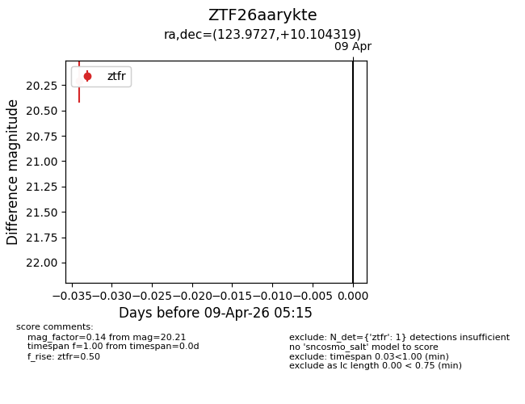
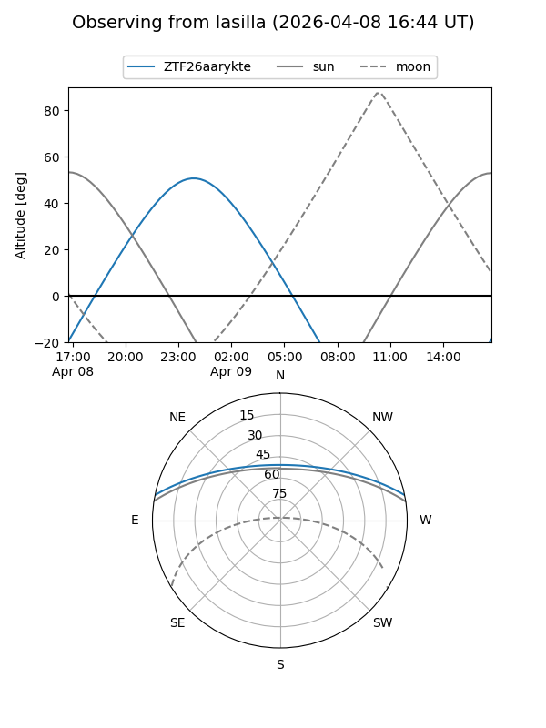
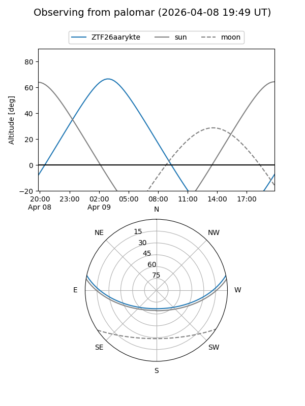

ZTF26aarykte
Target ZTF26aarykte at 2026-04-09 05:21
Aliases and brokers:
FINK: link
Lasair: link
ALeRCE: link
alt names
ZTF26aarykte (ztf,fink_ztf)
Coordinates:
equatorial (ra, dec) = 123.9727,+10.10432
equatorial (HMS+DMS) = 08:15:53.46,+10:06:15.55
galactic (l, b) = (213.2790,+23.30409)
Flags:
Photometry:
last ztfr=20.21
1 ztfr detections
Lightcurve

Visibility


Additional plots